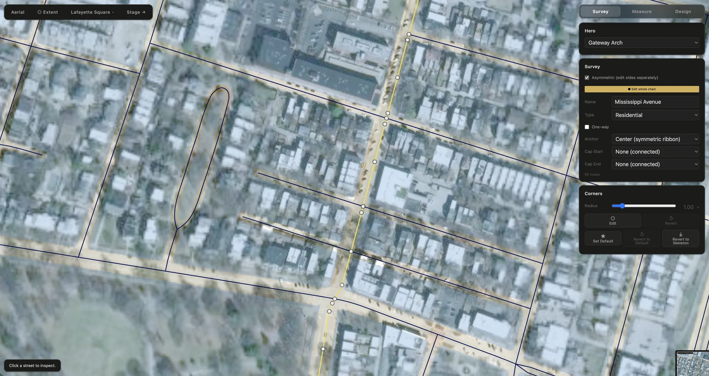
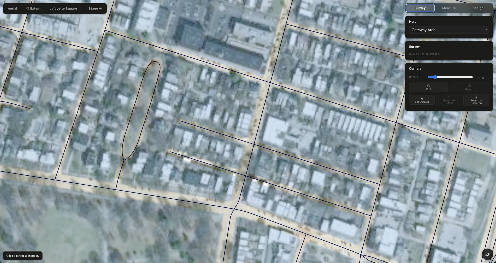
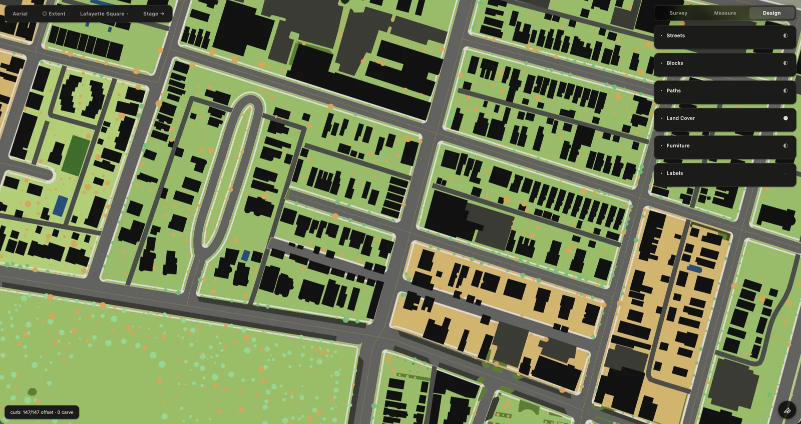
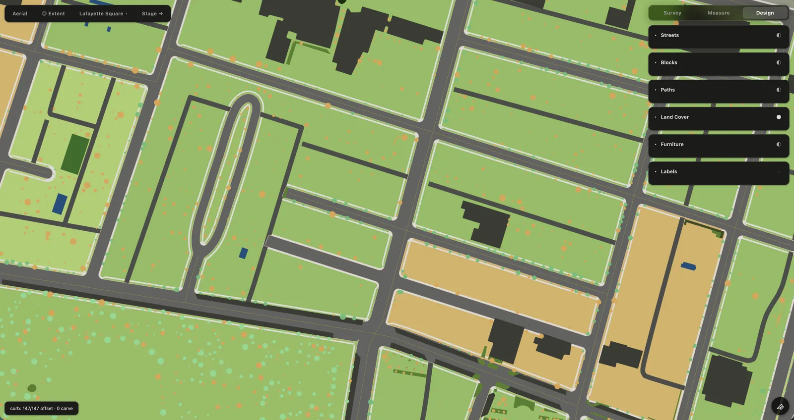
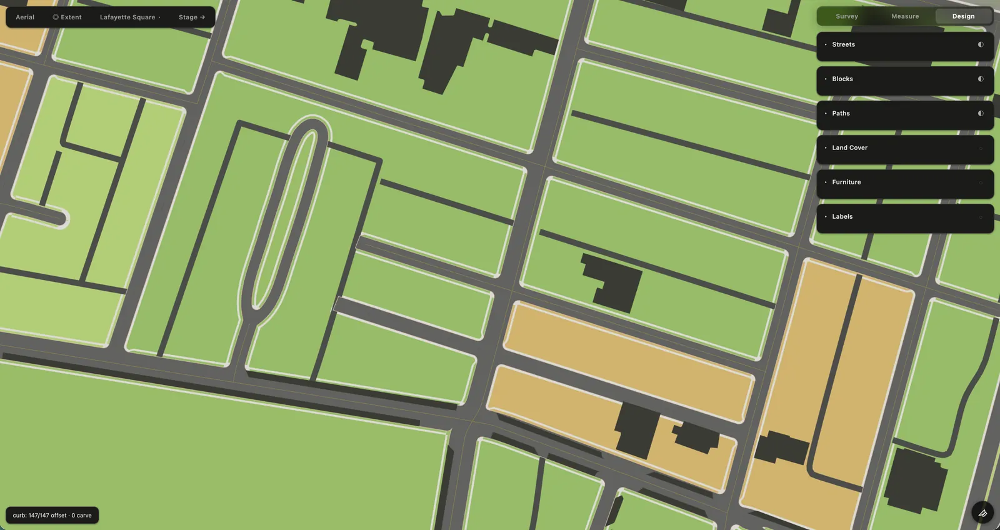
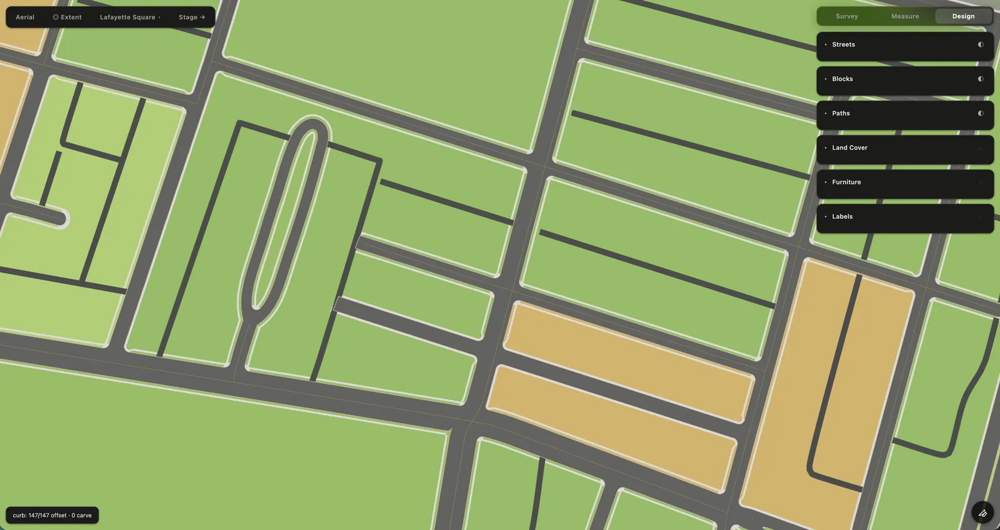
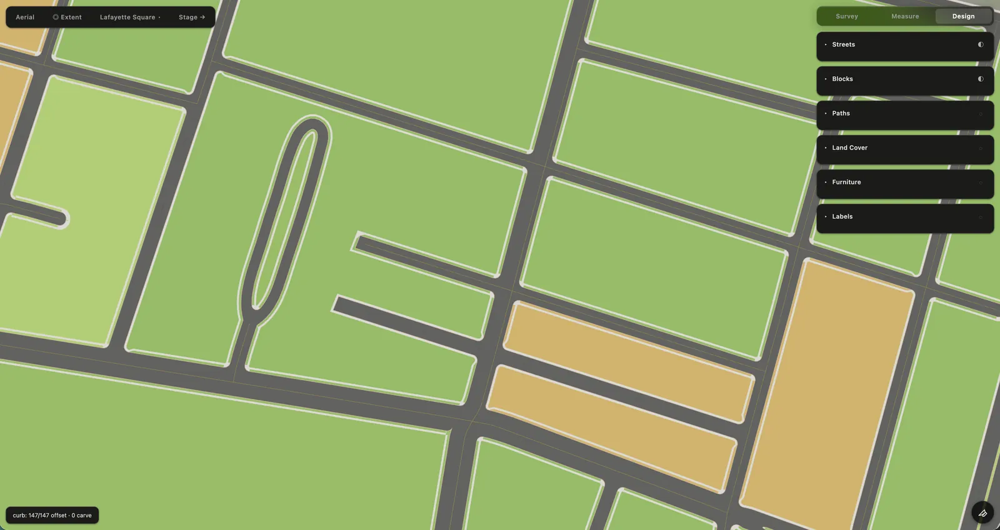
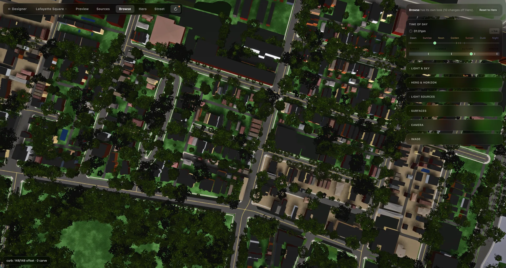
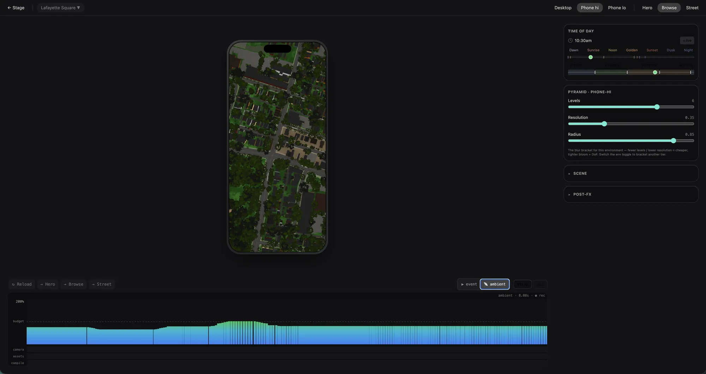

A Technical Prospectus
A different kind of digital place
Most digital systems begin with people: accounts, identities, profiles, relationships, permissions and activity. Place, when it appears, is usually context—a location attached to something else.
The Ward begins somewhere else.
Place is the primary object.
The Ward starts by constructing the place itself. Everything else—people, businesses, events, exchanges—belongs to that place.
That choice shapes the technology.
IWhat it’s made from
We start with what’s already there.
A neighborhood does not have to be invented from scratch.
We begin with what we can learn about the place: public data and records, direct observation, and information from the neighborhood itself. Streets, parcels, buildings, elevation and trees give us a foundation; local knowledge fills in what the records cannot.
Cartograph brings those sources together and turns them into a working model of the neighborhood.
The source material is only the beginning.
The work is in making sense of it: reconciling different sources, filling gaps, correcting what needs correcting, and making the information agree with the place.
Some of the foundation is already there. Streets, buildings, elevation, land cover, and other large-scale geographic data can be drawn from open datasets.
Other information belongs to the place. Parcels, zoning, trees, historic designations, and similar records come from the agencies and institutions that maintain them.
The rest comes from the neighborhood itself. Businesses, menus, photographs, landmarks, names, habits, and the details that distinguish one place from another.
IIHow a place is made
Cartograph
Cartograph is the environment used to construct a digital place.
It begins with geographic information and ends with a working model of the neighborhood.
First we build the place. Then we turn the lights on.
The Ward spends complexity upstream so the experience downstream can remain simple. Each step inherits a result, not the complexity that produced it.
Survey — draw the place


Most digital maps are made to help you find something or get somewhere. They can simplify, standardize and omit much of the physical character of a place because that character isn’t necessary to the job.
Survey has a different job. It builds a map meant to be looked at: one where the shape of a block, the sweep of a curb and the particular geometry of a street are part of the picture.
Section — build the ground





With the street plan established, Section builds the ground around it: sidewalks, treelawns, accessible corners, setbacks, and the other elements that give each block its physical structure.
It begins with the best available information, then gives the operator the tools to make it agree with the place.
2D construction Bake into 3D 3D authoring
Stage — light the place

The resolved place becomes a 3D environment. Its geometry is settled; now the operator authors materials, light, sky, atmosphere, cameras and the neighborhood’s changing appearance across the day.
The tools are closer to cinema and real-time graphics than conventional cartography. A Look can change continuously from dawn through daylight, golden hour, dusk and night.
Form and function are finally friends.
Authoring Bake for runtime The Slab
Preview — prove the place

Preview is Cartograph’s own testing environment. Every Slab is different, but the things that need testing are predictable.
It brings those tests together: GPU load, frame time, individual layers, camera states, different moments of the day, and the other conditions that determine how a Slab performs in production.
Aesthetics and performance are co-equal and non-negotiable.
The Slab — what ships
The Slab is the condensed result of that process. It contains what the runtime needs, rather than the systems and reasoning that produced it.
By the time a place reaches the browser, the work of constructing it is finished.
Arborist and Meteorologist are being built as resources in their own right. The Ward is their first client, not necessarily their last.
IIIWhat that buys
The place is already there
The Ward does not have to assemble a new network every time it adds a new function.
Place changes the economics
Cary is The Ward’s delivery module, and it routes the money. Orders and delivery fees come in throughout the day. At the end of the day, the money is split: the full price of the order goes to the business, most of the delivery fee goes to the neighbor who carried it, and a small amount stays with The Ward.
The split can be what it is because Cary does not have to buy an audience. The businesses and the people are already on the map, for reasons that have nothing to do with delivery.
Place changes the data problem
The Ward can know a great deal about a neighborhood without knowing very much about the people using it.
Person-level information can therefore be reserved for the functions that actually require it.
When place is the primary object, people do not have to become data merely to make the place useful.
Build with The Ward
The next step is more places.
That means partners who can help bring a Ward to a neighborhood, strengthen the underlying technology, develop the standalone instruments, or provide the infrastructure and capital to take the system further.

Beyond St. Louis
Early work is underway in Altadena and on Cape Cod, testing how the system translates to places with different geography, character, institutions, and local data.
New York footprint
.online addresses have been reserved across major New York City neighborhoods as a prospective metropolitan network.
View domains
- astorianyc.online
- bayridge.online
- bedstuy.online
- boroughpark.online
- brownsvillenyc.online
- bushwicknyc.online
- canarsie.online
- carrollgardens.online
- chelseanyc.online
- chinatownnyc.online
- coneyisland.online
- crownheights.online
- dykerheights.online
- eastflatbush.online
- eastharlem.online
- eastnewyork.online
- eastvillagenyc.online
- flatbushnyc.online
- ftgreene.online
- gramercy.online
- harlemnyc.online
- lesnyc.online
- longislandcity.online
- lowereastside.online
- meatpacking.online
- midtownnyc.online
- midwood.online
- murrayhill.online
- northbronx.online
- northbrooklyn.online
- parkslope.online
- prospectheights.online
- sheepsheadbay.online
- southbronx.online
- southbrooklyn.online
- uesnyc.online
- unionsquarenyc.online
- uwsnyc.online
- washingtonheights.online
- westvillagenyc.online